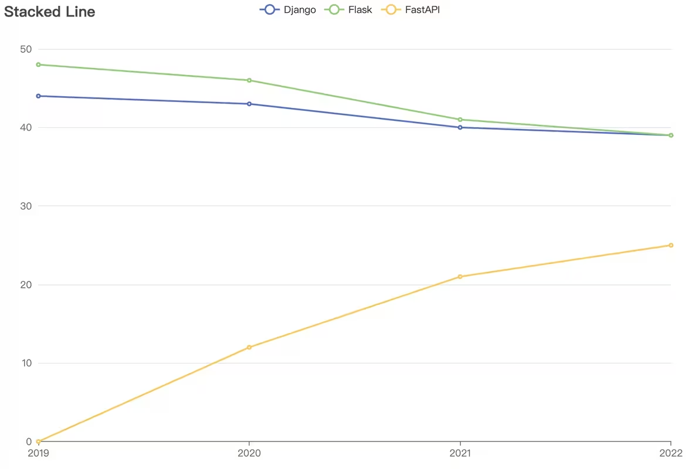

FastAPI框架
FastAPI 是一个用于构建 API 的现代、快速（高性能）的 web 框架，使用 Python 并基于标准的 Python 类型提示。
FastAPI诞生于2018年底，在2019年年底左右开始崭露头角，在短短的5年里让关注度就超过了在2010年底诞生的Flask。

FastAPI的关键特性：
-
快速：可与 NodeJS 和 Go 并肩的极高性能（归功于 Starlette 和 Pydantic）。最快的 Python web 框架之一。
-
高效编码：提高功能开发速度约 200％ 至 300％。
-
更少 bug：减少约 40％ 的人为（开发者）导致错误。
-
智能：极佳的编辑器支持。处处皆可自动补全，减少调试时间。
-
简单：设计的易于使用和学习，阅读文档的时间更短。
-
简短：使代码重复最小化。通过不同的参数声明实现丰富功能。bug 更少。
-
健壮：生产可用级别的代码。还有自动生成的交互式文档。
-
标准化：基于（并完全兼容）API 的相关开放标准：OpenAPI (以前被称为 Swagger) 和 JSON Schema。
FastAPI的中文文档：https://fastapi.tiangolo.com/zh/
官方文档写得既详细又容易理解，不管是学习还是项目开发时查阅都非常好用。所以我们的教学也基本按照阅读文档的形式来展开。
1 安装FastAPI并熟悉开发环境
FastAPI 实质上是Python 的一个包，所以我们首先需要一个Python 环境。这里的话强烈建议在工程目录下创建一个虚拟环境，然后将FastAPI及其依赖安装到虚拟环境中。FastAPI 目前是支持Python 3.8到3.12版本。如果不是这五个版本的话，有很大概率会出现问题，所以请先更换Python 版本。
进入虚拟环境中，首先安装FastAPI。它会帮我们同时安装好相关的依赖。然后我们还需要一个ASGI 服务器。
ASGI 全称 Asynchronous Server Gateway Interface，翻译过来叫做异步服务器网关接口。它定义了一套标准接口规范，用于连接 Web 服务器和应用程序框架，实现异步处理请求和响应。ASGI 的目标是提供高性能、可伸缩和灵活的 Web 应用程序开发体验。
简而言之它就是一个把你的电脑变成服务器的工具。有了它我们就可以在我们的电脑上接收网络请求并做出响应。我们这里用的这个服务器叫uvicorn。它是一个轻量级、高性能的ASGI服务器。
现在我们就可以创建一个示例来看一下FastAPI后端开发的基本形式。在工作目录下新建一个main.py文件，把文档里的这个代码复制进来。这个代码中只定义了一个对象和两个函数，并没有进行调用，所以将其当成Python 脚本来运行并不会有任何反应。我们需要使用uvicorn服务器来运行它。
方式1是在终端中运行命令：
uvicorn main:app --reload
方式2是在main.py文件中添加以下代码：
if __name__ == '__main__':
uvicorn.run('main:app', reload=True)
然后就可以将main.py 作为Python 脚本运行。
现在我们的电脑已经变成了一个Web服务器了。我们在示例里面实现了2个API。现在我们可以来试一下他们的效果。有3种方法来测试这个API。
-
直接在浏览器地址栏输入API的URL，并在后面带上相应的参数 。比如说
@app.get("/items/{item_id}")，这是一个GET请求，它的路径是/items，然后后面跟上一个路径参数item_id，它还有一个可选的查询参数q。那么我们可以直接访问http://127.0.0.1:8000/items/5?q=somequery来测试这个API。然后你会发现浏览器会显示一个JSON格式的响应。 -
访问由Swagger UI给我们自动生成的API文档 。只要在我们的服务器运行地址后面加上/docs。如果加载不出来的话可以挂个梯子。它上面会把我们写的所有API都给你列出来，包括请求方法、路径以及API的描述，这个描述实际上就是我们代码里面定义的函数的函数名。它会把小写字母加下划线格式的函数名给你转换成首字母大写空格分词的形式。所以我们给API函数起名字的时候要起成小写字母下划线的形式。点击某个API的名字可以看到它的详细信息。首先是参数，包括路径参数、查询参数。然后是响应，包括响应状态码、响应格式、响应头、响应体。我们点参数这一栏右边的这个try it out按钮，可以对API进行测试。然后我们可以输入参数，点击execute按钮，就能调用这个API，然后看到它给我们返回的响应。这个是Swagger UI提供的API文档。
-
访问由ReDoc给我们自动生成的API文档 。它和Swagger UI类似，更加地简洁和美观。但是它只能看，不能进行交互式测试，所以并不如Swagger UI那么方便。
我们在开发过程中基本上都是用第2种也就是Swagger UI生成的文档来进行测试。
2 概念解析
刚刚一股脑给大家说了一大堆专业术语，现在我们回过头来详细介绍一下嗷。
URL
（Uniform Resource Locator）统一资源定位器，用于定位互联网上资源的地址。通常由以下几个部分组成：
- 协议：指定了访问资源时使用的协议，一般都是HTTP、HTTPS（在HTTP基础上加入SSL加密）等。后面用://隔开。
- 主机(host)：通常指服务器的地址，可以是域名或IP地址。域名就是一段用.分隔的字符串，如www.baidu.com。IP地址就是用.分隔的四个数字，如192.168.0.1。后面用:隔开。
- 端口(port)：可选部分，用于指定服务器监听的端口号，默认值为80（HTTP）或443（HTTPS）。
- 路径(path)：指定资源在服务器上的位置，通常由一系列由斜杠（/）分隔的字符串组成。比如"/items/666"。
- 查询字符串(query string)：跟在路径后面，由问号(?)引导，用于传递参数给服务器。如"?q=somequery"。
- 锚点(anchor)：跟在查询字符串后面，由井号（#）引导，用于指定页面内的特定位置。
示例：http://127.0.0.1:8000/items/5?q=somequery
请求方法
HTTP协议定义了7种请求方法，分别为：
GET
从服务器获取资源，例如网页、图片、视频等。当用户在浏览器中输入一个 URL 并按下回车键时，浏览器便会向服务器发送一个 GET 请求，要求获取该 URL 对应的资源。服务器处理请求后，会将资源发送回客户端。主要作用是从服务器请求数据，而不会对服务器上的资源进行任何修改。往往搭配路径参数和查询字符串一起使用，即将请求的内容附加到URL里面。
通常用于以下场景：
- 获取网页内容：浏览器向服务器请求 HTML 文件以显示网页内容。
- 获取 API 数据：客户端向 API 发送 GET 请求以获取数据，例如获取用户信息、商品列表等。
- 加载资源文件：获取静态资源，如图片、CSS、JavaScript 文件等。
POST
用于向服务器发送数据，通常是为了提交表单、上传文件、或调用 API 接口以进行数据处理。与 GET 方法不同，POST 请求的数据一般不会附加在 URL 中，而是包含在请求体中。因此，POST 方法适合传输较大或敏感的数据。
典型使用场景包括：
- 提交表单数据：用户在网页上填写表单后，点击提交按钮，浏览器会使用 POST 方法将表单数据发送到服务器。例如，用户注册、登录、提交评论等操作都通常使用 POST 方法。
PUT
用于更新服务器上的资源，数据一般包含在请求体中。相同的 PUT 请求无论执行多少次，服务器上的资源状态应不会改变。
典型使用场景包括：
- 更新用户信息：用户修改个人资料时，客户端通过 PUT 请求将更新后的信息发送到服务器，服务器接收后更新数据库中的用户信息。
PATCH
用于对服务器上的资源进行部分更新。与 PUT 方法不同，PATCH 请求不需要包含完整的资源数据，而只需要传输需要更新的部分字段。因此，PATCH 方法非常适合用于需要频繁更新部分数据的场景。
PATCH 方法的典型使用场景包括：
-
更新用户部分信息：例如，用户想要修改个人资料中的某一项字段，如邮箱地址或电话号码，客户端可以通过 PATCH 请求仅传输需要更新的字段，服务器接收后更新相关字段的数据。
-
更新文档部分内容：在文档管理系统中，如果需要对某篇文档的部分内容进行更新，而不修改其他部分，可以使用 PATCH 方法传输更新的部分。
DELETE
用于删除服务器上的指定资源。在 RESTful API 设计中，DELETE 方法通常用于移除指定的资源对象或数据。例如，删除一篇文章、一条评论、或一个用户账户等。DELETE 方法的幂等性特性决定了无论同一个 DELETE 请求被执行多少次，服务器上的资源状态应保持一致，即资源被删除后，再次删除操作不会产生任何新的效果。
典型使用场景包括：
- 删除用户账户：当用户决定注销自己的账户时，客户端可以发送一个 DELETE 请求到服务器，要求删除该用户的账户信息。 示例：
- 删除文件或记录：在文件管理系统或数据库管理系统中，DELETE 方法常用于删除指定的文件或数据库记录。
JSON数据格式
JSON（JavaScript Object Notation）是一种轻量级的数据交换格式，它基于ECMAScript的一个子集。它采用了类似于JavaScript的语法，但是比起XML更加紧凑和易读。JSON格式的目的是用来传输数据，易于人阅读和编写，同时也易于机器解析和生成。
JSON实质上是一个无序的键值对集合，很像Python中的字典。它的键必须是字符串，值可以是字符串、数字、布尔值、数组、对象或null。用冒号(:)分隔键和值，用逗号(,)分隔不同的键值对。
例如：
{
"name": "John",
"age": 30,
"isStudent": false,
"hobbies": ["reading", "coding"],
"address": {
"street": "123 Main St",
"city": "New York"
},
"isMarried": null
}
JSON可以进行任意深度的嵌套，因此可以表示复杂的数据结构。比如我们用Swagger UI生成的API文档，其实就是一个JSON格式的文档，我们只是把它转换成HTML文件渲染出来。
IP地址
IP地址（Internet Protocol Address）是指互联网协议地址，它唯一标识网络中的计算机。由用.分隔的四个数字组成。 例如：192.168.0.1。
我们刚刚启动uvicorn服务器时，它的IP地址是127.0.0.1，这是一个特殊的IP地址，表示本机（我们的电脑），只能在我们电脑上访问，一般在开发环境中使用。
除此以外IP地址分为私网IP和公网IP。私网IP是指在局域网中分配的IP地址；公网IP是指在互联网上分配的IP地址。具有公网IP的设备可以被互联网上的其他设备访问。
域名
域名（Domain Name）是指通过域名系统（DNS）来解析IP地址的主机名，用.分隔的字符串来表示。例如www.baidu.com就是一个域名。它是对IP地址的一种友好表示，便于记忆和使用。像我们的本机IP地址127.0.0.1，也可以通过域名localhost来访问。
端口
端口（Port）是指网络通信中使用的一个虚拟通道，用于不同应用程序之间的通信。端口号是一个16位的整数，范围从0到65535。我们会把不同的应用程序绑定到不同的端口上。比如你有两个FastAPI应用，分别绑定到端口8000和8001，那么它们就可以同时运行在你的电脑上，然后你通过在URL后面加上端口号来指定访问哪个应用。
3 FastAPI应用的基本结构
首先我们从fastapi模块中导入FastAPI类，创建一个实例对象app。然后我们可以用这个对象来写API。
第一步是用FastAPI类的内置装饰器来定义API的请求方法和道德4路径。方法是@你这个FastAPI对象点上请求方法，然后参数是你这个API的路径，用字符串来表示。这个装饰器的实现我们不需要去了解，只需要知道它是告诉Python 接下来这个函数会是一个API。然后接下来我们就可以在这个函数里面实现我们的API逻辑。这个函数我们叫它路径操作函数。每当 FastAPI 接收一个使用 GET 方法访问 URL「/」的请求时这个函数会被调用。
这个函数在定义的时候除了用def外，还可以用async def来定义一个异步函数。
对于异步这个概念，FastAPI文档里给我们做了很生动的解释。
这里我给大家概括一下。如果采用异步编程的话，比如前端给我们发送了一个请求要调用一个API，然后这个API的逻辑非常复杂，需要相当一段时间才能处理完，而这时前端那边又发过来一个新的请求，我们可以让前面那个API到一边去慢慢处理，而我们先来响应新的请求，然后这个请求调用了一个新的API，我们也让它到一边去慢慢处理，我们继续等着响应别的请求。这期间我们时不时去询问一下这两个API处理完了没有，没有的话就接着干，处理完了我们就给它把返回的数据发送回前端。这就是用异步的思想通过并发的方式来提高程序的运行效率。
如果不用异步的话，那么一旦我们接到了一个请求，在这个请求处理完之前，其他的请求都只能排队干等着，不能响应，白白地浪费时间。
文档里面给我们举了一个排队买汉堡的例子，大家有兴趣可以看看，它表达的核心思想和我刚才讲的是一样的。
总而言之就是，在恰当的地方采用异步编程，可以提高系统的性能。
而在FastAPI中实现异步的方式叫“协程”。所谓“协程”就是用看起来很像顺序执行的代码的形式来实现异步，所以会非常直观易于理解。具体做法是用async def关键字来定义函数，然后在调用需要等待才能有结果的函数时加上await关键字。
当然现在大家可能不知道有什么需要等待才能有结果的函数，那在你不清楚具体情况的时候，直接用def来定义普通函数也够了，对我们写的项目来说数据量都不会太大，所以同步异步的差异一般也不明显。
现在我们就可以用uvicorn服务器来运行这个FastAPI应用了。启动uvicorn的时候一般要指定四个参数：
- 应用的名称，格式为文件名:应用实例名。比如main:app。
- 主机地址，一般用127.0.0.1。这个参数默认就是127.0.0.1，所以一般不用给。
- 端口号，一般用8000，如果8000被占用了，可以用其他的端口号。
- 重载模式，开启reload模式可以让代码改动后自动重启服务器更新应用。
启动以后在终端会输出服务器运行的日志，像这个样子，告诉你服务器运行的URL。我们按住Ctrl键点击这个URL，就可以直接访问。后面还说了Ctrl+C可以停止服务器。我们后面每次发送网络请求的时候，这里都会输出相应的日志。包括请求的端口号，请求方法，请求路径，请求参数，响应状态码。
这个响应状态码，具体来说就是HTTP状态码（HTTP Status Code）是用以表示网页服务器超文本传输协议响应状态的3位数字代码，第一位数字表示响应类别。
| 响应码 | 类别 | 解释 |
|---|---|---|
| 1xx | 信息性响应（Informational） | 表示请求已经接受，正在继续处理 |
| 2xx | 成功响应（Successful） | 表示请求已经被成功接收、理解并接受 |
| 3xx | 重定向信息（Redirection） | 表示要完成请求必须进行更进一步的操作 |
| 4xx | 客户端错误响应（Client Error） | 表示请求有语法错误，或者请求无法实现 |
| 5xx | 服务器错误响应（Server Error） | 表示服务器未能实现合法的请求 |
具体的常见的状态码有：
- 200 OK：请求已成功，服务器返回所请求的资源。
- 201 Created：请求已成功，服务器创建了新的资源。
- 400 Bad Request：请求无效。
- 401 Unauthorized：需要身份验证。
- 403 Forbidden：服务器拒绝请求。
- 404 Not Found：资源未找到。
- 500 Internal Server Error：服务器内部错误。
- 502 Bad Gateway：网关错误。
- 503 Service Unavailable：服务器暂时不可用。
4 路径参数
路径参数就是把参数塞进URL路径里面进行传递。像f-string一样的占位符来表示参数的值，实际的参数值将替换占位符部分。首先在装饰器参数中添加路径参数，再把路径参数作为函数的输入参数，然后就可以在函数里面进行使用。一个请求里面也可以有很多个路径参数。这里我们把输入进来的路径参数以字典的形式返回回去。对于这样一个API，我们可以在浏览器地址栏输入url来测试。然后会它给我们返回了一个JSON数据。这里FastAPI是自动帮我们把字典转换成了JSON数据。或者呢，我们也可以进入到Swagger UI里面找到这个API点击Try it out按钮，然后以表单的形式输入路径参数，点击执行按钮，会发现它自动把我们输入的参数塞到URL里面发送请求，然后响应体的格式和刚才看到的是一样的。
我们在定义路径操作函数的时候，通过Python 类型注解的方式来说明了路径参数的数据类型，然后FastAPI 会借助Pydantic的力量 在请求的时候自动帮我们进行类型校验。你看文档这边明确标识了这两个参数一个是字符串，一个是整数，如果你不输入对应类型的值的话，它会直接给你报错，不让你发送请求。
路径参数在使用的时候需要注意顺序。比如说这边这个例子。
然后对于路径参数的值，有一个预设值的概念。它是通过Python 内置的Enum类来把路径参数限定为有限个设定好的值。比如说我们有个路径参数叫食堂，那在兴隆山它就只能取“欣园”和“悦园”这两个值，那我们就可以把它作为预设值。
如果要在路径参数中输入路径，你直接输的话，FastAPI没有办法分辨哪里是请求的路径，哪里是参数的路径，所以要在占位符的地方参数名后面加上:path。
路径参数最常见的使用场景就是获取特定对象的信息。
user_db = [
{"id": 1, "name": "John", "phone": "1234567890"},
{"id": 2, "name": "Jane", "phone": "9876543210"},
{"id": 3, "name": "Bob", "phone": "5555555555"}
]
@app.get("/users/{user_id}")
def get_user(user_id: int):
for user in user_db:
if user["id"] == user_id:
return user
或者我们还可以把姓名设置为预设值。
user_db = [
{"id": 1, "name": "John", "phone": "1234567890"},
{"id": 2, "name": "Jane", "phone": "9876543210"},
{"id": 3, "name": "Bob", "phone": "5555555555"}
]
class Username(str, Enum):
John = "John"
Jane = "Jane"
Bob = "Bob"
@app.get("/users/{user_name}")
def get_user(user_name: Username):
for user in user_db:
if user["name"] == user_name:
return user
5 查询参数
查询参数也是塞进URL里面进行传递，用查询字符串来表示。以?开头像函数的关键字参数一样的形式，多个参数之间用&分隔。
我们定义的路径操作函数里面，所有不是路径参数的参数，都会被视为查询参数。
比如说这个例子里面定义了一个get请求，路径是/users，然后函数里面定义了两个参数skip和limit，这两个参数在路径里面都没有，所以它们就是查询参数。我们在API文档里面测试的时候可以看到它的用法和路径参数其实是一样的。只不过是路径参数在请求url里是直接写成路径的一部分，而查询参数是写在?开头的查询字符串后面。
这里还有一个细节是查询参数可以有默认值，有默认值的查询参数在请求的时候可以不指定，FastAPI会自动使用默认值。比如这里我们给skip和limit设置了默认值，然后在API文档里面你会发现它左边就没有红色的星号和required标识了。然后点击try it out按钮，你会发现skip和limit的默认值都已经填好了。此外默认值也可以是None，如果你不知道默认值该设成什么的话就可以设置成None，但同时要在这个参数的类型注解里面或上None。
查询参数常用于传递筛选、分类这种请求的参数，例如搜索功能，内容分页等。我们在搜索引擎比如百度当中输入关键词然后搜索，你就会发现网址中就用查询参数的形式包裹了你搜索的内容。
user_db = [
{"id": 1, "name": "John", "phone": "1234567890"},
{"id": 2, "name": "Jane", "phone": "9876543210"},
{"id": 3, "name": "Bob", "phone": "5555555555"}
]
class Username(str, Enum):
John = "John"
Jane = "Jane"
Bob = "Bob"
@app.get("/users/{user_name}", description="Get user by name")
def get_user(user_name: Username):
for user in user_db:
if user["name"] == user_name:
return user
@app.get("/users", description="Get all users")
def get_all_users(skip: int = 0, limit: int =3):
return user_db[skip:skip+limit]
这里我们数据库中有5条数据，但是在一个页面上只能显示得下3条数据，所以我们用skip和limit两个参数来实现分页功能。limit参数指定每页显示的数据量，skip参数指定跳过前面多少条数据，由当前页数乘以limit得到。然后通过列表的切片操作就可以很方便地获取到每一页的内容。
这里因为我们定义了两个有点相似的路径操作函数，仅凭函数名和参数名可能不太容易区分它们的功能，所以我们可以在装饰器里面添加一个description参数来描述API的详细功能。这里添加的描述信息会在API文档详情中显示。
路径参数和查询参数一般是在GET和DELETE请求中使用，POST,PUT,PATCHE等请求中也可以使用，但不是很推荐，因为它们一般会传递比较复杂的数据结构，我们通常会使用专门的请求体。
6 请求体
请求体 是客户端发送给 API 的数据。相对应的是响应体 ，它是 API 响应给客户端的数据。
FastAPI 支持多种请求体类型，包括 JSON、表单、文件等。但是JSON基本上占据90%的使用场景。
JSON请求体的本质很简单，其实就是把参数以键值对的形式写成JSON，然后发送给服务器。
而在FastAPI中，我们使用Pydantic来定义请求体。首先需要从Pydantic模块导入BaseModel类。然后自定义一个类继承自BaseModel，然后在类里面以类变量的形式定义请求体的字段。同时附带上类型注解，FastAPI会自动帮我们进行类型检验。当然你可以给某些字段设置默认值。没有默认值的字段必须在请求体中指定，有默认值的字段可以不指定。来看一下这里这个例子。
在Swagger UI里面会自动按请求体的格式给我们生成一个JSON数据，我们可以对里面的值进行编辑。这里你会发现不管你有没有指定默认值，它都会给你生成一个值。有默认值就生成默认值，没有的话也会自动生成一个。但这只是Swagger UI提供的功能，前端在发送请求的时候如果指定必填的参数，是会报错的。比如这里把name字段删掉然后发送请求，它会给你报错说name字段是必填的，但是删掉具有默认值的description字段就没有事，它会自动把默认值填上去。如果你不按定义好的数据类型来给参数赋值，也会报错。
当你发送请求后，FastAPI会自动把请求体解析成Pydantic模型对象，然后用你定义的Pydantic模型来接收里面的字段，不存在的字段会被丢弃，也就是说你的请求体里面如果有多余的字段是不会报错的。
在使用JSON请求体的时候，需要注意的是，不同字段之间用逗号分隔，然后最后一个字段后面不能有逗号，否则Python 将不能把JSON解析成字典，会报错。
在路径操作函数内部直接访问模型对象的属性。
后面这些将请求体和路径参数查询参数一起使用的例子就不讲了，因为大家肯定知道怎么用，而且这种用法本身也不是很推荐。
7 字符串校验和数值校验
除了指定参数的数据类型外，Pydantic还提供了一些更进一步的校验功能。
比如说在查询参数里面，我们经常会需要一些字符串参数，但并不希望用户肆意妄为地输入字符串，最直接的就是我们往往需要限制输入的字符串长度。这时候我们可以用Query函数来对字符串的长度进行限制。看这个例子，这里面的用到了typing模块中的Union类来注解一个参数可以为多种类型，但是写起来比较麻烦。实际上在3.10版本及以上Python中，我们可以直接用|来分隔多种类型，这样写会更直观也更方便。我们用Query函数来作为参数的默认值，然后可以通过Query函数的参数来指定各种限制。这个函数有非常多的参数，具体用法大家可以自己去搜。
然后还有是路径参数的话，我们用Path函数来进行校验，它的用法基本上和Query函数一样。然后这里还提到了一个Annotated类，它可以给参数添加元数据（描述信息、最大值、最小值等等），它可以和Query, Path等函数配合使用，来实现更复杂的校验。这部分内容大家感兴趣的话自己去看文档就可以了。
Pydantic中还有一个Field类，它是给请求体中的字段添加类似的元数据。
8 请求体示例
有时候我们只指定一个请求体中字段的数据类型并不足以表明我们想要接收到什么样的数据，所以我们可以在文档中添加一个示例，让前端更容易知道应该发送什么数据过来。
声明请求体示例有三种方法。
第一种是在定义请求体模型的时候，在最后加上一个model_config字段，给他赋上一个固定格式的嵌套字典，最里面的字典键是examples，值是一个列表，里面可以用字典表示一个示例。
第二种是在定义请求体模型的时候，用Field类来给每个字段添加元examples值，比较麻烦。
第三种是在定义路径操作函数参数的时候，在类型注解里面用Annotated类来添加一个Body函数的元数据，在这个Body函数里面用examples参数来指定示例。
我比较喜欢用第一种方法，因为它最为直观。添加的示例在我们测试API的时候也会作为默认值自动给出。
9 Cookie参数
Cookie是我们通过浏览器访问网站时，存储在本地的一些数据，它可以用来保存用户的一些信息，比如说登录状态、购物车信息等。（至于怎么存储怎么读取是前端的事情）。但有的时候要是前端偷懒非要把Cookie发过来让我们后端处理，我们要接收Cookie的话，需要把参数声明为Cookie类型。方法是从fastapi导入Cookie类，然后用Annotated把它作为参数的一个元数据。
10 Header参数
我们之前讲爬虫的时候提到过，Header参数是在进行HTTP请求的时候，告诉服务器的一些额外信息。这个等大家后面要写项目的时候再去了解就行了，现在只需要知道它的声明方法和Cookie参数类似，也是导入Header类，然后用Annotated来声明。
11 响应模型
之前我们讲了请求体是客户端发送给API的数据，而响应体是API响应给客户端的数据。那请求体在定义的时候有请求体模型，所以响应体当然也是有自己的模型的。定义响应体模型的方法也很简单，只要在API的装饰器里面加上一个response_model参数，然后把定义好的Pydantic模型类传进去就可以了。响应模型最主要的作用是把输出的数据限制在模型定义内。这里举了一个传输用户信息的例子。前端通过post请求发送用户信息给后端，后端接收到请求后，把用户信息返回回去，但是显然把密码这样的隐私信息返回回去是不安全的。这时候我们可以定义两个Pydantic模型，一个是接收用户信息的模型，一个是返回用户信息的模型，在返回模型里面把密码字段去掉，然后把这个返回模型作为response_model参数传给API的装饰器。这样即便我们在路径操作函数里面直接return接收到的用户信息，也不会把密码返回回去。响应模型会把不包含在模型中的字段过滤掉。
除此以外还有一些响应模型相关的装饰器参数。
12 响应状态码
我们可以在API的装饰器里面加上一个status_code参数，来指定响应的HTTP状态码。不指定的话，响应成功的时候会默认返回200。如果你有一些其他的需求的话可以手动指定。
13 表单数据
有时候我们传输数据的格式不是JSON，而是表单，比如后面大家写用户注册和登录的API的时候，会使用表单字段来传输用户名和密码。要使用表单的话首先要安装python-multipart这个库，然后在从fastapi导入Form函数，把它作为参数的类型注解。这个我们以后学安全性的时候再说。
14 请求文件
这个东西比较重要，我们来详细看一下。首先在HTTP协议中文件是以表单的形式上传的，所以首先我们要安装python-multipart这个库。然后我们在路径操作函数里面定义一个参数，类型为bytes，然后用File函数来接收文件。这种方式把文件的所有内容都存储在内存里，适用于小型文件。不过，大部分情况下，UploadFile 更好用。
UploadFile 参数的声明更为简单，只要从FastAPI导入UploadFile类然后直接把参数类型注解为UploadFile就可以了。UploadFile 有一些属性，最常用的是filename，它可以获取上传文件的名字，然后是file，它可以获取上传文件的IO对象。然后是read方法，它可以读取上传文件的内容。以上这些都是支持异步操作的方法，我们可以用async/await来调用。然后把文件参数作为可选参数这个东西，貌似运行起来会报错，而且一般来说我们也不会有上传空文件这种需求，就不管他了。
我们还是举个例子来看吧。
excel文件操作：
import pandas as pd
df = pd.read_excel('data.xlsx')
print(df)
# 将整个DataFrame转换为一个字典，列名为键，数据列为值
df_dict = df.to_dict()
print(df_dict)
# 将每一行转换为一个字典，列名为键，行数据为值
df_dict = df.to_dict('records')
print(df_dict)
# 将列转换为字典，列名为键，单个值为值
df_dict = df.to_dict('list')
print(df_dict)
API上传文件：
@app.post("/uploadfile/")
async def create_upload_file(file: UploadFile):
if file.filename.endswith(".xlsx"):
data = read_excel(file.file)
data_dict = data.to_dict(orient='records')
return data_dict
else:
return {"error": "File type not supported"}
此外我们可以把文件参数声明为一个列表，里面每个元素都是一个UploadFile对象，这样就可以一次上传多个文件。
15 处理错误
在处理请求的时候，我们基本不可避免地会遇到各种各样的错误。我们当然可以直接返回一串自定义的错误信息，但这样做显然不够优雅页不够规范，而且前端也不好处理。所以我们需要使用一些专门的错误响应。借助Python 的异常机制来进行操作。方法是从fastapi模块导入HTTPException类，然后在需要的地方抛出一个HTTPException异常，一般我们会给它两个参数，一个是响应状态码status_code ，一个是具体的错误信息detail。这样写了以后，当我们试图查找这个不存在的对象时，客户端就会收到一个404 Not Found的响应，并且会看到具体的错误信息。
16 路径操作配置
当我们写了很多API以后，它们可能可以按照不同的业务逻辑划分到不同的模块里面，比如用户模块、商品模块、项目模块。我们可以在装饰器里加上一个tags参数，来指定这个API的分类标签。这样在API文档中会按照标签来分类显示。不进行指定的API会被归类到default标签下。
17 依赖项注入
这个机制你认真看文档还是非常复杂的，这里大家可以先简单理解一下，所谓依赖项就是我们在自己定义的路径操作函数中去取引用外部函数。它可以直接在函数的参数里面调用外部函数，免去了内部调用还要输入参数的麻烦，可以最大限度地降低代码重复度。比如这边你用Depends来调用外面定义的函数，然后用一个参数来接收这个函数的返回值。这样的话外面定义的这个函数你是不用给它传参数的。不然的话你在路径操作函数内部去调用外面自定义的函数，那么你在路径操作函数里面还得把所有参数都再列一遍，如果你不能理解这个机制，就把它当成固定写法也行。
18 SQL数据库
数据库（Database）是按照数据结构来组织、存储和管理数据的仓库。我们常见的Excel表格就是数据库的一种可视化形式。数据库中通常会有若干的表对应Excel中的工作表，会有若干的字段对应Excel中的列，每一行则对应Excel中的一行数据。数据库一般有增删改查（Create、Read、Update、Delete）四个基本操作。
对于大部分非静态网页来说，无时无刻不在产生大量的数据，这些数据往往需要存储到数据库中。在FastAPI中，我们一般使用SQL关系型数据库。SQL数据库里面我们比较常用的有SQLite和MySQL。SQLite是一个轻量级的数据库，它会直接内嵌到Python程序中，比较适合中小型网站的快速开发。而MySQL是基于服务器的数据库，也就是说要使用MySQL你首先要有一台专门的服务器，然后它安装和配置起来也比较麻烦，它比较适合大型网站的开发。那我们这里学习的时候当然就用更方便的SQLite来演示了。
这部分文档是在3个月前刚刚更新的，所以暂时还没有中文翻译。这次更新可以说变化还是挺大的，之前文档里面使用SQLAlchemy来操作数据库的，现在是已经换成了一个新的库叫SQLModel，所以这部分我也是最近现学的。使用下来的话，确实感觉比之前的SQLAlchemy要好用一点。虽然FastAPI这部分文档是英文的，但是SQLModel的官方文档是有中文版的，所以你可以到SQLModel这边来学习相关内容。当然不管是哪个文档讲得都比较复杂，不是很适合初学者，所以我这边把文档里的实例简化一下来给大家演示一下SQLite的使用方法。
创建数据库表
首先SQLModel是Python的一个库，我们先把它安装到虚拟环境中。
然后我们在目录下创建一个sql文件夹，把数据库相关的文件都放到这里面。创建一个__init__.py文件，让这个文件夹成为一个包，方便导入到其他地方。
第一步我们要创建SQLite数据库。在sql中新建一个文件叫做database.py。我们在这里面写上创建数据库并初始化的内容。
from sqlalchemy import create_engine
sqlite_file_name = "database.db"
sqlite_url = f"sqlite:///{sqlite_file_name}"
connect_args = {"check_same_thread": False}
engine = create_engine(sqlite_url, connect_args=connect_args)
先根据项目内容给数据库取个名字，然后定义数据库创建路径，这里我们直接创建到当前文件所在目录下，写法是sqlite冒号三个杠然后加上数据库的名字。
然后我们定义一个连接参数，在这里面把check_same_thread字段设置为False，这样我们的FastAPI项目可以进行多线程操作。
然后我们用create_engine函数来创建一个数据库引擎，传入数据库路径和连接参数。
数据库创建完了以后，我们来创建表。
from sqlmodel import SQLModel
def create_db_and_tables():
SQLModel.metadata.create_all(engine)
然后我们需要创建Session依赖项。
from sqlmodel import Session
from typing import Annotated
from fastapi import Depends
def get_session():
with Session(engine) as session:
yield session
SessionDep = Annotated[Session, Depends(get_session)]
这个文件基本上就是纯公式写法，暂时没必要搞懂，复制粘贴就完事了。不过文档里面默认展示的是一部分代码，你可以点下面这个Full the preview按钮来看完整的代码，主要是前面这个导入模块的语句。
接下来我们新建在sql下面新建一个models.py文件，在里面来构建数据库内部的数据结构。
现在我们考虑构建一个数据库来存储食堂的信息。首先我们要有一个食堂模型来记录食堂自身的信息，像名称，地址，内外环境的图片等等。然后一个食堂可以分成好几层，每一层有很多的窗口，那我们要有一个楼层模型来记录所有窗口的信息。然后每个窗口又会有很多的菜品可供选择，所有我们还要有一个菜品模型来记录菜品的信息，像名称、价格、图片、描述等等。我们把这三个模型都用数据库中的表来表示。
添加表的方法是定义一个class，让它继承大写的SQLModel类，大写的SQLModel从小写的sqlmodel模块中导入。定义class的时候，在后面再加上一个table参数等于True，这样SQLModel会帮我们把当前的class转换成一个数据库表。
然后我们在这个class里面以类变量的形式定义表的字段，也就是Excel表格中的列属性。
在表中定义字段一般是使用sqlmodel模块中的Field函数，注意这里是从sqlmodel模块中导入的，跟我们定义请求体模型的时候从pydantic模块中导入的那个Field函数是不一样的。
在数据库中我们要求每个表必须要有一个主键，英文叫primary_key。表中的所有元素具有的主键值必须是唯一的，它就像是Excel表格中最左侧的行号一样。在SQLModel中，我们只要在Filed函数中令primary_key=True，它就会自动成为主键。我们一般会定义一个叫id的整数字段作为主键，然后让它可以是空值并且默认值为空。这样SQLModel在每次插入数据的时候不需要我们手动指定主键，会自动给它分配一个自增的id值。这个地方算是一个公式化的写法，不理解的话直接抄代码就行。
然后我们的食堂肯定要有一个名字，我们定义一个name字段，注解为字符串类型。在SQLModel中，有一种叫ORM（Object-Relational Mapping，对象-关系映射）的概念，它可以把数据库中的表转换成Python对象，这样我们就可以用Python的语法来操作数据库。具体来说的话SQLite当中存储数据会用到一些和Python 不太一样的数据类型，例如VARCHAR，TEXT等，而我们在Python 当中不需要去管这些奇怪的数据类型，我们直接把字段定义成字符串类型，这样存储数据的时候SQLModel会自动把字符串转换成适合SQLite的类型。这里我们常用的类型有字符串、整数、浮点数、布尔类型、时间类型，基本上就这几个。
我们再加上一个校区信息，campus字段，然后呢我们一共有8个校区，这边可以用一个枚举类型。枚举类型因为它定义的时候是继承自字符串的，所以它本质上也就是字符串，所以可以映射到数据库的类型里面。这样有了表以后，我们就可以来创建数据库了，我们在models.py文件中导入database.py文件里面定义的创建数据库表的函数，然后调用它来创建数据库。现在我们跑到外面的main.py里面用app.lifespan装饰器创建一个startup事件管理函数，这个函数下面的代码块只会在服务器启动的时候调用一次。这里也是公式法写法，照抄就行。这时候直接运行，它会报错。为什么呢？因为我们下面还定义了两个空的表，这里面没有主键，但是SQLModel要求每个表都必须要有一个主键。所以我们先把这两个class给注释了。创建完数据表以后，你会看到我们这个sql文件夹下面多了一个database.db文件，这个就是生成的SQLite数据库了。
我们可以打开SQLite Studio软件来查看一下。在数据库菜单下选择添加数据库，选择一个已存在的数据，然后把我们这个生成的db文件导进去。它有一个表，叫canteen，然后在结构里面有我们定义的三个字段，字段的类型已经被自动转换为SQLite支持的类型了。我们可以在数据这里来手动添加一些数据试一下。在这里进行操作是不经过Python程序的，所以它是没有类型检查的，你随便输什么乱七八糟的进去都不会报错。但是这个id因为是主键，所以它是有校验的，你必须输入不重复的整数才行。而如果你不指定id的话，他会自动给你生成一个当前最大id值加1的整数作为id。这就是我们定义id字段的时候那一串语句的作用。
然后我们再加上一个预览图片吧，image字段。在数据库里面存储图片的话，有两种选择。一种是直接把图片以二进制的形式存进去，这也会很占空间，而且解码的时候也很麻烦，所以我们一般会选择第二种方法，就是把图片上传到图床，然后把图片的URL存进去。数据库里用一个字符串类型来存储图片的URL。
所谓图床，其实就是一个专门存储图片的服务器，我们可以把图片上传上去，然后可以通过互联网访问上面的图片。百度上直接搜图床，就能找到很多免费的图床。我这里用的是https://www.helloimg.com/，它是一个免费的图床，当然可供存储的资源也比较有限，但是对于学习来说肯定够用了。我们把图片上传到图床以后，他会给我们一个URL，比如https://www.helloimg.com/i/2024/12/07/675413b99b067.jpeg，我们就可以把这个URL存到数据库里面。
{kind=link}
现在让我们来更新一下这个数据库里的表。这里比较坑的点是你直接再运行一遍models.py文件是没用的，必须要先把这个数据库db文件删除了再运行创建一个新的，并且你要删除db文件的话还需要先把它从SQLite Studio里面移除，或者直接把Studio退掉，不然的话这个文件处于一个被占用的状态，是没法删除的。更新完以后我们重新把它添加进Studio，这样就image字段就有了，但是我们之前手动输入的数据也没有了。
增删查改
现在让我们创建API来操作数据库，实现数据的增删查改4项基本操作。在sql文件夹下再创建一个新文件crud.py，crud这四个字母分别代表create、read、update、delete，也就是增删查改。
我们从models.py里面导入Canteen，从database.py里面导入engine，因为调用的是sql包内部的模块，所以我们用相对导入，在模块名前面加一个点。然后再从sqlmodel里面导入Session类。
定义一个创建食堂的函数，给一个食堂参数，类型是models里面定义的Canteen类，再给一个session参数，类型是Session会话，用Depends函数把get_session注入进去。然后我们就可以用session来操作数据库。首先把食堂对象add进数据库，然后commit提交，然后刷新一下这个对象，最后把这个对象返回。
然后我们来到main.py里面，创建一个post请求，路径/canteen，然后这个路径操作函数的参数我们用Depends函数把sql.crud里面的创建食堂的函数注入进去，然后获取它的返回值，把这个返回值return回去。
然后让我们到API文档里面来测试。这时候会有一个问题，就是我们虽然把id定义成了可选项，但是在文档里面它会默认存在，我们要手动把它删掉，不然很容易导致id重复而报错。并且前端的人看到这个文档也容易认为id是必须的，然后他请求的时候也来指定一个id，这就很容易导致id重复然后数据导入失败。所以我们需要让请求体里面不含有id这个字段。我们到models.py里面来新建一个模型，这个模型继承自SQLModel，但是后面不要写table=True。这样在创建数据库表的时候它就不会被识别成表，而是一个普通的模型。
这样我们在定义创建食堂函数的时候，把这个不含id的模型作为参数，这样请求体里面就不会包含id。然后在session会话里面用Canteen类的model_validate方法把不含id的模型转换为带有id的模型。这样我们再来看文档里面的请求体，它就不会让我们指定id了。我们还可以在装饰器里面加上响应模型参数，这样在文档里面响应体的地方能给我们一个响应的预览。然后我们还可以给模型的内容加上一个示例，这样我们的文档会更加直观。现在我们来测试这个API，然后看SQL数据库里面的内容。
这样我们就实现了数据库的create增加操作。然后来看read查取操作。
查取操作一般来说有两种情况，一种是给定一属性，找到该属性对应的对象，比如我们这里用id来查找食堂。在crud.py里面定义一个函数read_canteen，参数是食堂id。然后还是用with语句打开一个Session会话，接着用session.get方法在Canteen这个数据库表里面来查找id对应的食堂对象，如果没找到的话我们抛出一个HTTPException异常，状态码是404 Not Found，错误信息是"Canteen not found"。如果找到了，我们把这个对象返回。
在main.py里面定义一个get请求，路径/canteen加上一个路径参数/{canteen_id}，然后用Depends函数把read_canteen注入进去，获取它的返回值，把这个返回值return回去。它的响应体模型也是models.Canteen。看文档。输入1返回欣园，输入2返回悦园，输入3没找到返回404 Not Found。这是用id来查，当然我们真实的网站里面大概会有搜索功能，然后一般是用名字来搜索，这时候会涉及到一个叫索引的概念。
简单来说就是当你数据库里的数据量很庞大的时候，你要在里面查找一个字符串，就得把整个数据库遍历一遍，这个事情就非常地耗时了，所以我们可以给数据加上一个索引，像字典一样给他一个目录，这样可以加快查找速度。方法是在定义数据库表的时候，用Field函数给要查找的字段加上一个index=True参数，这样SQLModel会自动生成索引。但是生成索引的代价一个是数据库占用的空间增大，另一个是我们写入数据的时候它要更新索引，写入速度会变慢。所以你要根据实际情况来选择是否添加索引。像我们写小型网站的话你加索引其实可能会得不偿失。
这是按给定属性查取一个对象，还有一种情形是获取全部对象，当然数据多了之后一个界面上肯定显示不下，所以往往是按需获取一部分。用offset和limit参数来进行限制。
再接下来是update更新操作。我们希望对一个食堂的属性进行修改，但通常情况下我们不会全部修改，而是只改动一两个字段，因此我们在发送请求体的时候需要模型中的字段均为可选值。所以这里我们可以再创建一个CanteenUpdate模型，不包含id，然后所有字段都可选。定义一个update_canteen函数，我们准备用id指定修改哪个对象，然后传入修改的请求体。这里model_dump函数里要把exclude_unset设为True，不然请求的时候它会把你没有指定的值以默认值的形式也进行更新。因为我们希望可以只更新部分字段，所以要用Patch请求。
最后是delete删除操作。通过id指定一个食堂，然后在数据库里面把它删除掉。
通过外键和关系建立表之间的连接
现在我们已经实现了食堂模型的功能，然后我们来考虑创建与之相关联的楼层模型和菜品模型。一个食堂会有多个楼层，一个楼层会有多个窗口，一个窗口会有很多菜品。因此我们需要在查取食堂信息的时候能够一并获得其楼层信息和菜品信息。